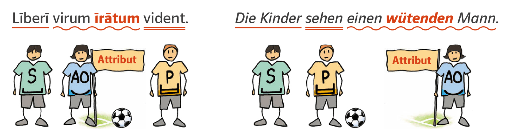
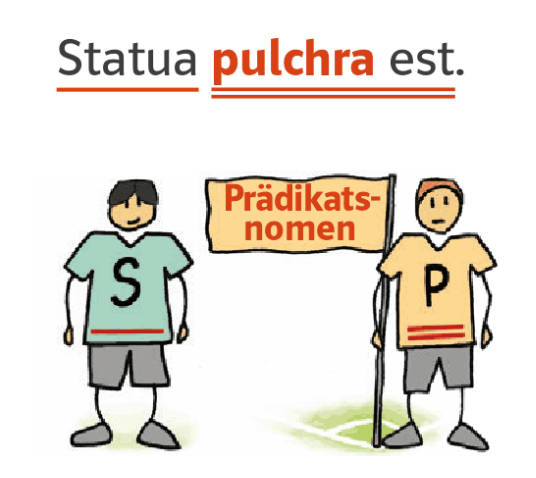

Līberī virum īrātum vident. Die Kinder sehen einen wütenden Mann.
Was fällt dir auf?
Die rot markierten Wörter geben Antwort auf die Frage „Was für einen / welchen Mann sehen die Kinder?"
R
Genauso wie wütend ist īrātum ein Adjektiv (Eigenschaftswort). Ein Adjektiv bestimmt ein Substantiv näher. Wenn man es mit „Was für ein(e)?" oder „Welche(r, s)?" erfragen kann, ist es ein Attribut. Das Attribut ist kein eigenes Satzglied, sondern immer nur Teil eines Satzgliedes.

R
Adjektive werden dekliniert und richten sich in Kasus, Numerus und Genus nach dem Substantiv, auf das sie sich beziehen. Die Übereinstimmung des Adjektivs mit seinem Bezugswort in Kasus, Numerus und Genus wird KöNiGsregel oder auch KNG-Kongruenz genannt.
Die Adjektive der o-/a-Deklination werden wie die Substantive dieser Deklinationen dekliniert. Die Neutrum-Regel ($\rightarrow$ G12) gilt auch für die Adjektive.
Deklinationstabelle
Numerus
Kasus
o-Dekl. m.
a-Dekl. f.
o-Dekl. n.
Singular
Nominativ
magn-us
magn-a
magn-um
Akkusativ
magn-um
magn-am
magn-um
Plural
Nominativ
magn-ī
magn-ae
magn-a
Akkusativ
magn-ōs
magn-ās
magn-a
Warum in dieser Tabelle keine Übersetzungen stehen, erfährst du im Formenspeicher F2 auf S. 230.
Achtung: Manche Adjektive haben im Nominativ Singular m. einen Buchstaben, der in den anderen Formen nicht mehr erscheint: pulcher (m.) $\rightarrow$ pulchra (f.), pulchrum (n.).
Adjektiv als Prädikatsnomen
Beispiele:
Statua pulchra est. – Die Statue ist schön.
Statuae pulchrae sunt. – Die Statuen sind schön.
R
Als Ergänzung zu esse ist das Adjektiv im Satz ein Prädikatsnomen. Nach dem Prädikatsnomen fragt man: „Wie ist jemand/etwas?"
In solch einem Fall besteht das Prädikat dann aus dem Adjektiv (pulchra / pulchrae) und dem Verb (est / sunt).
Auch für das Adjektiv als Prädikatsnomen gilt die KöNiGsregel.

Substantiv und Adjektiv aus verschiedenen Deklinationsklassen
Adjektive und Substantive folgen immer ihrer eigenen Deklinationsklasse. Daher können die Endungen gleich sein (z. B.: servus bonus) oder unterschiedlich (z. B. für malus).
servus bonus – gleiche Endungen bei Substantiv und Adjektiv
Numerus
Kasus
o-Deklination
o-Deklination
Deutsch
Singular
Nominativ
servus
bonus
der gute / ein guter Sklave
Akkusativ
servum
bonum
den guten / einen guten Sklaven
Plural
Nominativ
servī
bonī
die guten / gute Sklaven
Akkusativ
servōs
bonōs
die guten / gute Sklaven
für malus – unterschiedliche Endungen bei Substantiv und Adjektiv
Numerus
Kasus
kons. Dekl.
o-Deklination
Deutsch
Singular
Nominativ
fūr
malus
der böse / ein böser Dieb
Akkusativ
fūrem
malum
den bösen / einen bösen Dieb
Plural
Nominativ
fūrēs
malī
die bösen / böse Diebe
Akkusativ
fūrēs
malōs
die bösen / böse Diebe
Sehr gut! Du hast den Text gelesen und erhältst 1 Punkt.